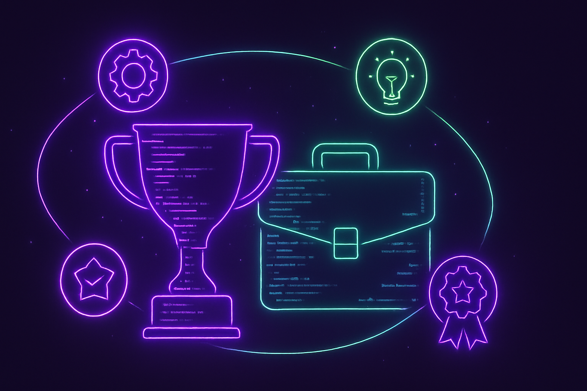
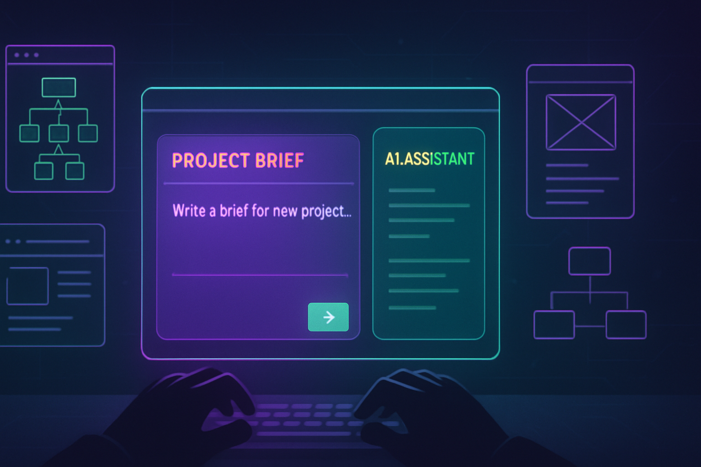
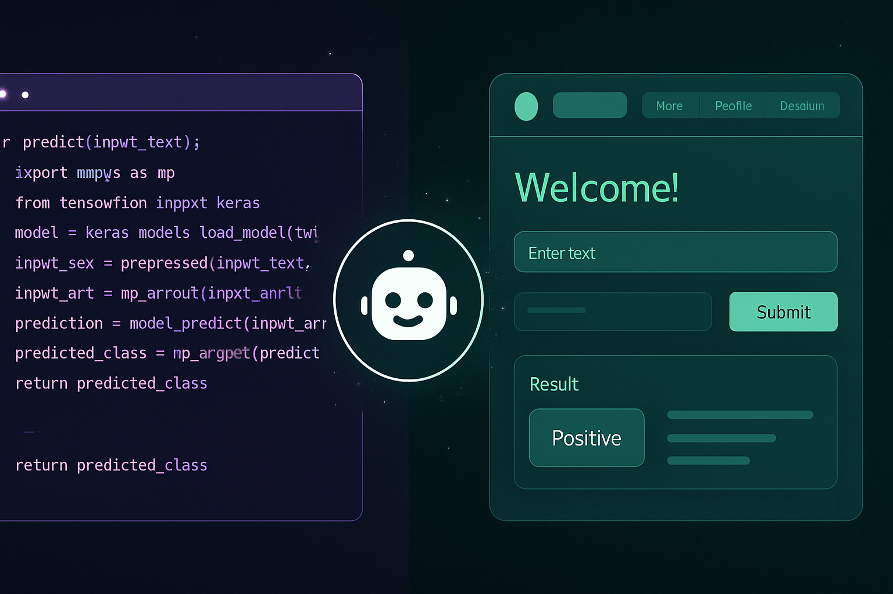
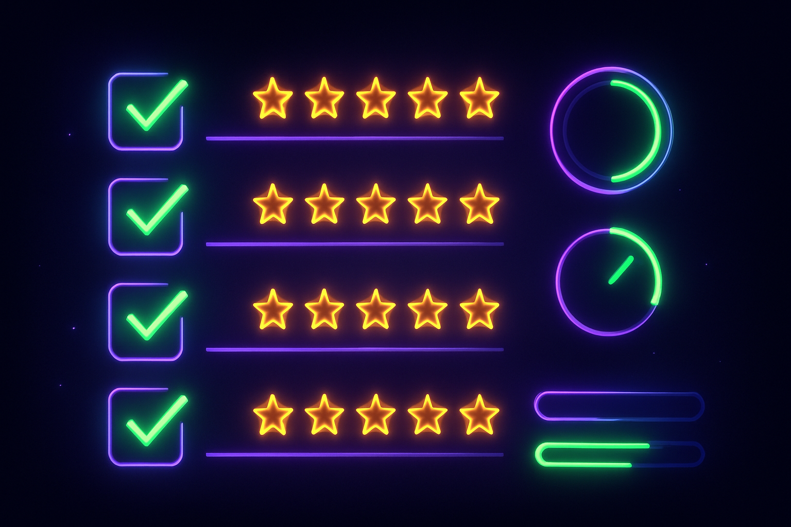
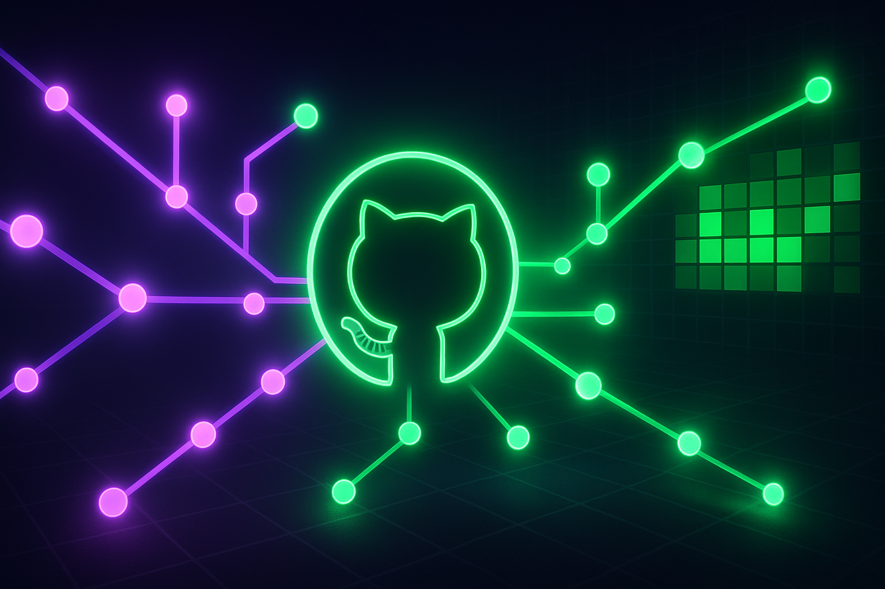

Собираем всё, что изучили на курсе, в один рабочий кейс — понятный, завершённый и готовый к демонстрации.
Ключевая мысль: Финальный проект — ваша демонстрация навыков через реальную задачу. Чем ближе проект к жизни, тем сильнее он выглядит в портфолио.

Ключевая мысль: Проект рождается не из «что бы придумать?», а из «какую реальную задачу я могу упростить с помощью Claude Code?»
Ключевая мысль: Claude Code работает лучше, когда получает не «сделай проект», а описание задачи, пользователя, результата и ограничений.

product-description-generatorКлючевая мысль: Для портфолио важно не только то, что проект существует, но и то, что его можно показать — интерфейс, сценарий, результат, ссылка.

Ключевая мысль: Сильный проект — это не самый сложный, а тот, который можно открыть, понять, запустить и показать.

GitHub — это витрина проекта не только для разработчиков. Здесь лежит код, описание, инструкция и доказательство выполненной работы.
Практика: Регистрация на GitHub → оформление профиля → публикация проекта → ссылка в портфолио.

Создаём инструкцию для Claude Code, которая помогает работать с проектом правильно. Скиллом можно делиться с коллегами и знакомыми.
Ключевая мысль: Skill показывает, что студент умеет не только сделать проект, но и описать правила работы с ним для AI-ассистента.
Онлайн-выпускной в формате демонстрации проектов. 3–5 минут на каждого. Подготовьте презентацию с Claude + демонстрацию проекта вживую.
Выбрать идею → Описать для Claude Code → Собрать MVP → Оформить на GitHub → Показать на выпускном